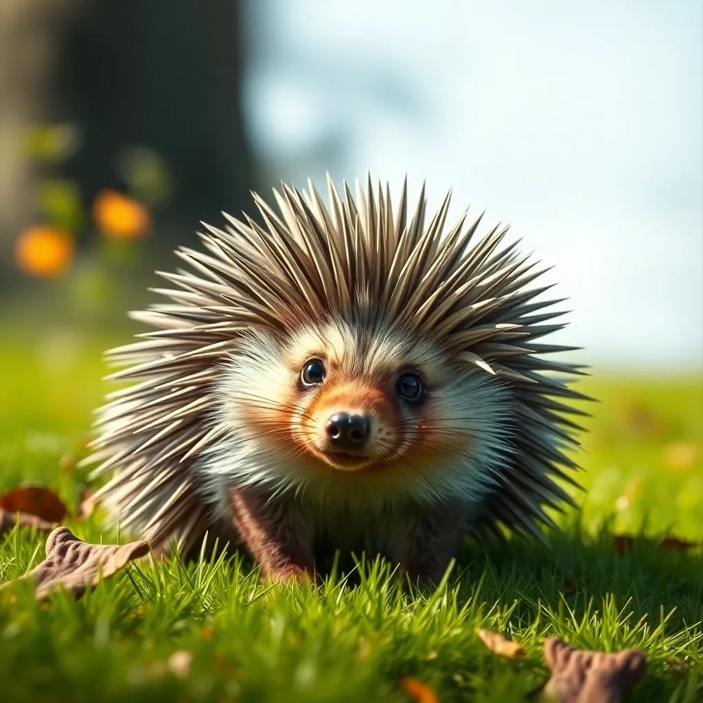

Tier des Jahres 2024:
Der Igel ist das Tier des Jahres 2024. Die "Deutsche Wildtier Stiftung" hat ihn zum Tier des Jahres 2024 gewählt!
In Deutschland gibt es leider immer weniger von diesen süßen Tieren, denn sie finden immer weniger Nahrung und geeignete Unterschlupfe
Du möchtest mehr über den Igel erfahren?
Hier findest du noch mehr interessante Informationen: Klexikon.de 



Tier-Witze:
Warum können Fische so schlecht Basketball spielen?
– Weil sie Angst vor dem Netz haben!
Eine Katze und eine Maus kommen in eine Bäckerei.
Maus: "Ich möchte gerne ein Stück Pflaumenkuchen mit Sahne."
"Und Sie?" fragt die Verkäuferin die Katze.
"Ich möchte nur einen Klecks Sahne auf die Maus, bitte!"
Treffen sich zwei Mäuse und plaudern. Auf einmal fliegt eine Fledermaus vorbei.
Da sagt die eine Maus zur anderen: "Wenn ich groß bin, werde ich auch Pilot!"
Eine Fliege saust haarscharf an einem Spinnennetz vorbei. Spinne: "Na warte, morgen erwische ich dich!"
Fliege: "Ätsch, ich bin eine Eintagsfliege!"
Zwei Schnecken stehen an einer Straßenkreuzung. Die eine möchte die Straße überqueren, da sagt die andere: "Vorsicht! In zwei Stunden kommt der Bus!"
Treffen sich zwei Fische. Sagt der eine: "H(a)i!". Darauf der andere: "Wo?!"
Wie nennt man einen Keks, der unter einem Baum liegt?
Schattiges Plätzchen!
Das Kind kommt am Ende des 4. Schuljahres stolz nach Hause und sagt:
"Papa, mein Vertrag für die 4. Klasse wurde verlängert!"